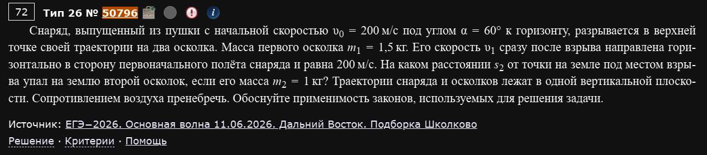
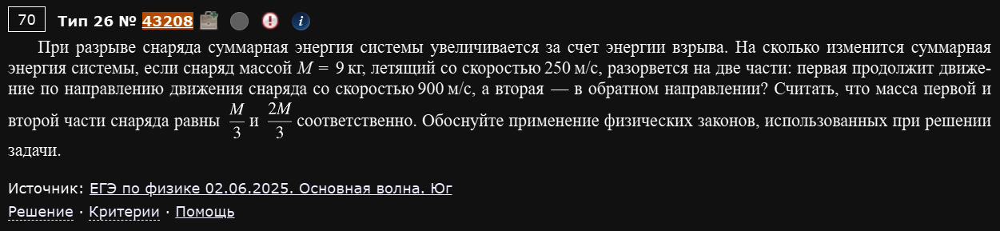
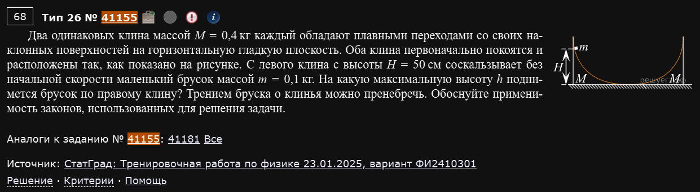
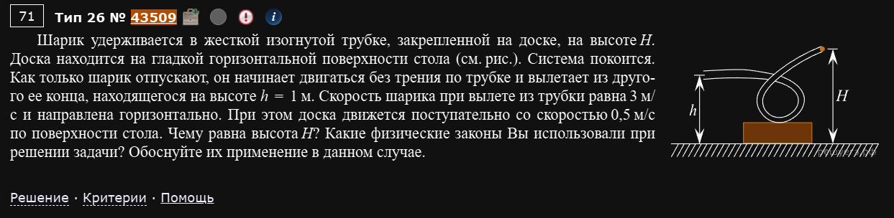
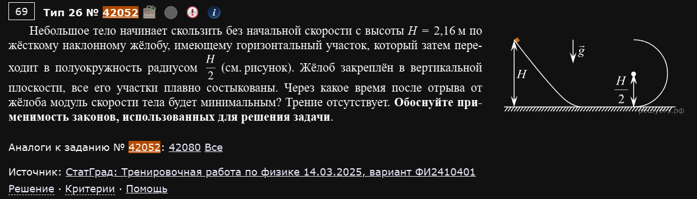
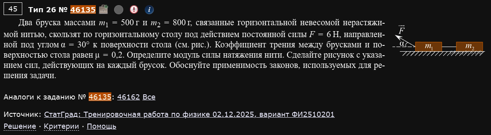
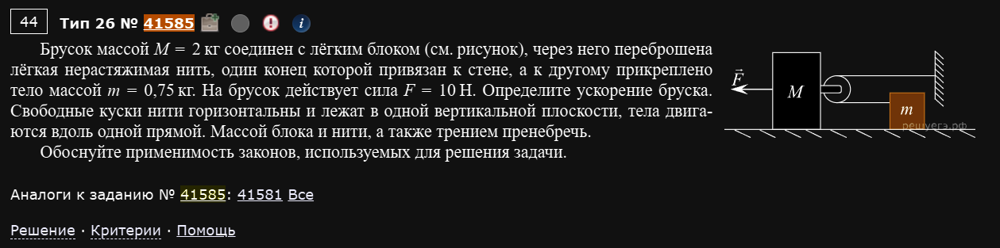
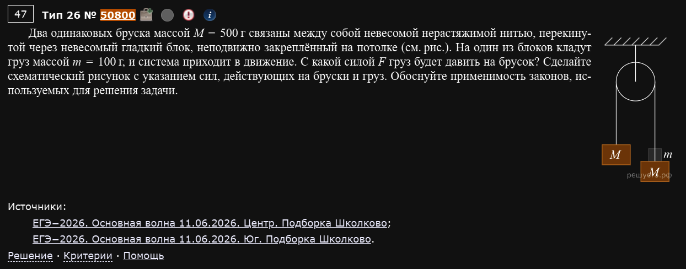
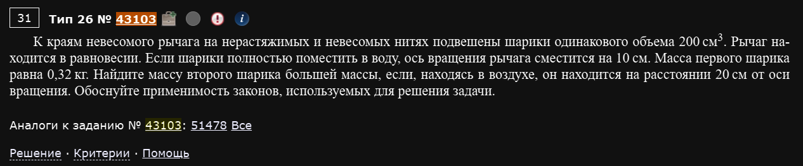

№26 Сложная расчетная задача, Механика
Разборы
№26. Механика (расчётная задача высокого уровня с обоснованием)
Самый сложный номер экзамена — и в плане физики, и в плане оформления. Здесь почти всегда нужно связать два-три раздела механики сразу (кинематику с законами сохранения, статику с гидростатикой, динамику связанных тел), а в конце явно обосновать применимость законов, которые вы использовали — то есть не просто написать формулу, а объяснить, почему именно она здесь применима (например: “тела считаем материальными точками, так как их размеры много меньше пройденных расстояний”, “трением пренебрегаем по условию”, “систему тел можно считать замкнутой в момент взрыва, так как время взаимодействия мало и внешние силы не успевают передать заметный импульс”). Разбираю девять разных по духу задач максимально подробно.
Что значит "обоснуйте применимость законов" на практике
Комиссия ждёт не общие фразы, а привязку к конкретным особенностям именно этой задачи. Стандартный набор обоснований: закон сохранения импульса применим к системе тел, если она замкнута (внешние силы отсутствуют или их импульс за время процесса пренебрежимо мал — типично для взрывов/столкновений, происходящих быстро); закон сохранения механической энергии применим, если нет трения и неупругих потерь (или ровно те явления, что превращают механическую энергию в другие виды, отдельно учтены); тело можно считать материальной точкой, если его размеры пренебрежимо малы по сравнению с характерными расстояниями задачи; движение можно считать равноускоренным, если результирующая сила постоянна. В каждом примере ниже я отдельно отмечаю, какое обоснование нужно дать.
Столкновения, взрывы и законы сохранения
Пример 1) (Решу ЕГЭ №50796 — ЕГЭ-2026, основная волна 11.06.2026, Дальний Восток, подборка Школково)

Снаряд, выпущенный из пушки с начальной скоростью υ₀ = 200 м/с под углом α = 60° к горизонту, разрывается в верхней точке своей траектории на два осколка. Масса первого осколка m₁ = 1,5 кг. Его скорость υ₁ сразу после взрыва направлена горизонтально в сторону первоначального полёта снаряда и равна 200 м/с. На каком расстоянии s₂ от точки на земле под местом взрыва упал на землю второй осколок, если его масса m₂ = 1 кг? Обоснуйте применимость законов, используемых для решения задачи.
Задача распадается на три последовательных этапа: полёт снаряда до взрыва (кинематика движения под углом), сам взрыв (закон сохранения импульса) и падение осколка после взрыва (снова кинематика).
Этап 1 — подъём до верхней точки. В верхней точке траектории вертикальная составляющая скорости равна нулю, остаётся только горизонтальная: м/с — это горизонтальная скорость снаряда (и обоих будущих осколков вместе, до разрыва) в момент взрыва. Высота верхней точки — из формулы максимальной высоты полёта:
Этап 2 — взрыв (закон сохранения импульса). Взрыв — процесс очень быстрый, поэтому внешние силы (тяжесть) за время самого взрыва не успевают передать системе заметный импульс — импульс сохраняется, как для замкнутой системы. Записываем закон сохранения импульса отдельно по горизонтали и по вертикали, для суммарной массы кг, летевшей со скоростью до взрыва.
По вертикали: до взрыва вертикальный импульс равен нулю (в верхней точке ). После взрыва: . Так как по условию направлена строго горизонтально (), получаем — второй осколок тоже стартует после взрыва строго горизонтально.
По горизонтали:
Отрицательный знак означает, что второй осколок полетел назад относительно первоначального направления полёта снаряда, со скоростью 50 м/с.
Этап 3 — падение второго осколка. С высоты H=1500 м, без начальной вертикальной скорости, применяем кинематику свободного падения:
Горизонтальное расстояние (в направлении, обратном первоначальному полёту):
Ответ: s₂ = 500√3 м ≈ 866 м.
Обоснование законов: осколки и снаряд считаем материальными точками (их размеры много меньше пройденных расстояний); на всём протяжении полёта (кроме мгновенного взрыва) на тела действует только сила тяжести — сопротивлением воздуха пренебрегаем по условию, поэтому движение равноускоренное и применимы формулы кинематики; в момент взрыва импульс системы сохраняется, так как взрыв практически мгновенен и импульс силы тяжести за это ничтожное время пренебрежимо мал по сравнению с импульсом, которым обмениваются осколки.
Пример 2) (Решу ЕГЭ №43208 — ЕГЭ по физике 02.06.2025, основная волна, Юг)

При разрыве снаряда суммарная энергия системы увеличивается за счёт энергии взрыва. На сколько изменится суммарная энергия системы, если снаряд массой M = 9 кг, летящий со скоростью 250 м/с, разорвётся на две равные по массе части: первая продолжит движение по направлению движения снаряда со скоростью 900 м/с, а вторая — в обратном направлении? Обоснуйте применение физических законов, использованных при решении задачи.
Масса каждой части: кг.
Закон сохранения импульса (взрыв — быстрый процесс, внешние силы за это время импульс практически не меняют): берём направление первоначального движения снаряда как положительное.
(знак минус — так как вторая часть летит в обратном направлении со скоростью , которую пока считаем положительной величиной)
Энергия до взрыва (обычная кинетическая энергия целого снаряда):
Энергия после взрыва (сумма кинетических энергий обеих частей):
Изменение энергии:
Ответ: ΔE ≈ 1,9 МДж (энергия увеличилась).
Обоснование законов: импульс системы сохраняется при взрыве, так как эта система в момент разрыва может считаться замкнутой (внутренние силы взрыва многократно превосходят внешнюю силу тяжести за время самого разрыва); полная механическая энергия при этом, наоборот, не сохраняется — именно в этом и состоит физика взрыва: часть химической/внутренней энергии взрывчатого вещества переходит в кинетическую энергию осколков, что и требуется найти.
Многоэтапные задачи со связанными телами
Пример 3) (Решу ЕГЭ №41155 — СтатГрад: тренировочная работа по физике 23.01.2025, вариант ФИ2410301)

Два одинаковых клина массой M = 0,4 кг каждый обладают плавными переходами со своих наклонных поверхностей на горизонтальную гладкую плоскость. Оба клина первоначально покоятся. С левого клина с высоты H = 50 см соскальзывает без начальной скорости маленький брусок массой m = 0,1 кг. На какую максимальную высоту h поднимется брусок по правому клину? Трением бруска о клинья можно пренебречь. Обоснуйте применимость законов, использованных для решения задачи.
Задача решается в два независимых этапа — сначала брусок съезжает с ПЕРВОГО (левого) клина, который при этом сам приходит в движение (клинья не закреплены, поверхность гладкая), а затем брусок взаимодействует уже со ВТОРЫМ (правым, изначально покоящимся) клином.
Этап 1 — спуск с левого клина. Система “брусок + левый клин” замкнута по горизонтали (стол гладкий, внешних горизонтальных сил нет) — горизонтальная составляющая импульса сохраняется, и раз оба тела стартовали из состояния покоя, суммарный горизонтальный импульс всё время равен нулю:
Механическая энергия тоже сохраняется (трения нет по условию, а нормальная реакция между бруском и клином работы не совершает, так как перпендикулярна относительному перемещению):
Подставляя :
Этап 2 — подъём по правому клину. Брусок (со скоростью , ) наезжает на второй клин (изначально в покое). В момент, когда брусок достигает максимальной высоты на клине, их скорости относительно друг друга равны нулю — то есть брусок и клин на мгновение движутся с одной и той же скоростью . Снова используем сохранение горизонтального импульса (система “брусок + правый клин” тоже замкнута по горизонтали) и сохранение энергии:
Ответ: h = 0,32 м = 32 см.
Обоснование законов: на каждом из двух этапов система “брусок+клин” замкнута по горизонтали (стол гладкий, единственная горизонтальная внутренняя сила — реакция между бруском и клином), поэтому горизонтальный импульс сохраняется; трения нет по условию, поэтому механическая энергия тоже сохраняется на каждом этапе по отдельности (между этапами часть кинетической энергии клина 1 “остаётся” у него и в дальнейшем движении бруска не участвует — это не потеря энергии, а просто разделение системы на невзаимодействующие после этого части).
Максимальная высота на подвижном клине = момент общей скорости
Ключевая идея, без которой эта и подобные задачи не решаются: когда брусок поднимается по подвижному (не закреплённому) клину, момент максимальной высоты — это НЕ момент, когда скорость бруска относительно земли равна нулю (как было бы для неподвижного клина), а момент, когда скорость бруска относительно клина равна нулю, то есть брусок и клин на мгновение движутся с одинаковой скоростью относительно земли.
Пример 4) (Решу ЕГЭ №43509)

Шарик удерживается в жёсткой изогнутой трубке, закреплённой на доске, на высоте H. Доска находится на гладкой горизонтальной поверхности стола. Система покоится. Как только шарик отпускают, он начинает двигаться без трения по трубке и вылетает из другого её конца, находящегося на высоте h = 1 м. Скорость шарика при вылете из трубки равна 3 м/с и направлена горизонтально. При этом доска движется поступательно со скоростью 0,5 м/с по поверхности стола. Чему равна высота H?
Закон сохранения импульса (система “шарик+доска” замкнута по горизонтали — стол гладкий, а трубка и доска изначально покоились): раз начальный импульс был равен нулю, конечный горизонтальный импульс тоже должен быть равен нулю — шарик и доска после вылета движутся в противоположные стороны. Это даёт отношение масс:
Закон сохранения энергии (трения нет по условию): вся потенциальная энергия, “потерянная” шариком при спуске с высоты H до высоты h, переходит в кинетическую энергию шарика и доски вместе:
Делим обе части на , используя :
Ответ: H = 1,525 м.
Обоснование законов: система “шарик + доска” замкнута по горизонтали, поскольку стол гладкий (сила трения отсутствует) и никакие другие горизонтальные внешние силы на систему не действуют — поэтому горизонтальная составляющая импульса сохраняется, несмотря на то что сама трубка (через которую движется шарик) прочно закреплена на доске и активно взаимодействует с шариком изнутри; механическая энергия сохраняется, так как шарик движется по трубке без трения, а доска скользит по столу тоже без трения.
Задачи на отрыв от траектории и последующее движение
Пример 5) (Решу ЕГЭ №42052 — СтатГрад: тренировочная работа по физике 14.03.2025, вариант ФИ2410401)

Небольшое тело начинает скользить без начальной скорости с высоты H = 2,16 м по жёсткому наклонному жёлобу, имеющему горизонтальный участок, который затем переходит в полуокружность радиусом H/2. Жёлоб закреплён в вертикальной плоскости, все его участки плавно состыкованы. Через какое время после отрыва от жёлоба модуль скорости тела будет минимальным? Трение отсутствует. Обоснуйте применимость законов, использованных для решения задачи.
Это самая сложная задача в подборке — она требует последовательно: (1) найти точку, где тело теряет контакт с жёлобом внутри петли, (2) найти скорость и высоту в этой точке, (3) понять, что происходит после отрыва, и (4) сообразить, когда скорость минимальна в свободном полёте.
Шаг 1 — где тело теряет контакт с петлёй. Пусть — угол, отсчитываемый от верхней точки петли (радиус ). Высота тела на этом угле: (при — верх петли, высота ; при — низ петли, высота 0).
По закону сохранения энергии (трения нет), скорость на угле :
Второй закон Ньютона в проекции на радиус (к центру петли) даёт условие для силы реакции жёлоба N:
Тело отрывается от жёлоба, когда N обращается в ноль (жёлоб может только толкать тело, но не тянуть его):
Приравнивая оба выражения для :
Подставляя и упрощая (H сокращается):
(так как , а , отношение ).
Шаг 2 — скорость и высота в точке отрыва.
Шаг 3 — раскладываем скорость отрыва на компоненты. Направление скорости в точке отрыва — по касательной к окружности. При , . Раскладывая скорость на горизонтальную и вертикальную составляющие (геометрия петли даёт: горизонтальная составляющая , вертикальная ):
Шаг 4 — минимум скорости после отрыва. После отрыва тело летит как свободное тело под действием только силы тяжести: горизонтальная составляющая скорости не меняется, а вертикальная меняется по закону . Модуль полной скорости:
Эта величина минимальна ровно тогда, когда (горизонтальная составляющая от времени не зависит, так что минимизировать нужно только квадрат вертикальной составляющей):
Ответ: t = 0,2 с.
Обоснование законов: пока тело находится в жёлобе, применяем закон сохранения энергии (трения нет по условию) и второй закон Ньютона в проекции на радиус (для определения условия отрыва — реакция опоры не может быть отрицательной, так как жёлоб — не двусторонняя связь, а поверхность, которая может только толкать тело); после отрыва тело движется исключительно под действием силы тяжести, поэтому применимы формулы равноускоренного (по вертикали) и равномерного (по горизонтали) движения, как при обычном движении тела, брошенного под углом к горизонту.
Минимум скорости при свободном полёте — это всегда момент
Отдельного вычисления для финального ответа на самом деле не потребовалось: раз горизонтальная скорость не меняется при полёте только под действием силы тяжести, полная скорость минимальна именно тогда, когда вертикальная составляющая обнуляется — это общий факт для любой задачи о свободном полёте тела, а не особенность именно этого жёлоба.
Динамика систем связанных тел
Пример 6) (Решу ЕГЭ №46135 — СтатГрад: тренировочная работа по физике 02.12.2025, вариант ФИ2510201)

Два бруска массами m₁ = 500 г и m₂ = 800 г, связанные горизонтальной невесомой нерастяжимой нитью, скользят по горизонтальному столу под действием постоянной силы F = 6 Н, направленной под углом α = 30° к поверхности стола и приложенной к первому бруску (второй брусок тянется через нить). Коэффициент трения между брусками и поверхностью стола равен μ = 0,2. Определите модуль силы натяжения нити.
Сила F приложена к первому бруску (под углом вверх от горизонта) и тянет за собой второй брусок через горизонтальную нить.
Рассмотрим систему как целое, чтобы найти общее ускорение. Вертикальная составляющая F действует только на первый брусок, уменьшая именно его нормальную реакцию (а значит, и его силу трения), в то время как у второго бруска нормальная реакция равна просто его весу.
Уравнение движения системы (сумма горизонтальных сил на оба бруска, кг):
Подставляем числа (, ):
Рассмотрим отдельно второй брусок (на него действуют только тяжесть, нормальная реакция, трение и натяжение нити T — никакой приложенной силы F напрямую):
Ответ: T ≈ 3,57 Н.
Обоснование законов: оба бруска движутся с одинаковым по модулю ускорением, так как связаны нерастяжимой нитью; второй закон Ньютона применяем как для системы в целом (чтобы найти общее ускорение, не имея дела с неизвестным натяжением), так и отдельно для второго бруска (чтобы, зная ускорение, найти натяжение как единственную оставшуюся неизвестную силу в его уравнении движения); закон трения скольжения применяем для каждого бруска отдельно, так как их нормальные реакции различны (у первого уменьшена вертикальной составляющей силы F).
Пример 7) (Решу ЕГЭ №41585)

Брусок массой M = 2 кг соединён с лёгким блоком, через него перекинута лёгкая нерастяжимая нить, один конец которой привязан к стене, а к другому прикреплено тело массой m = 0,75 кг. На брусок действует сила F = 10 Н. Определите ускорение бруска. Свободные куски нити горизонтальны и лежат в одной вертикальной плоскости, тела двигаются вдоль одной прямой. Массой блока и нити, а также трением пренебречь.
Ключевая особенность этой задачи — блок закреплён на самом бруске (а не неподвижно), то есть это подвижный блок, перемещающийся вместе с M. Один конец нити закреплён на стене, нить идёт от стены к блоку на бруске, огибает его и идёт дальше к грузу m.
Кинематическая связь скоростей. Если брусок M сдвигается на расстояние x (от стены), то участок нити “стена-блок” удлиняется на x. Так как полная длина нити постоянна, участок “блок-груз” должен укоротиться на x — а поскольку сам блок при этом тоже сдвинулся на x, груз m приближается к своему концу нити со скоростью, которая вдвое больше скорости бруска (это стандартное свойство подвижного блока):
Силы, действующие на подвижный блок (а значит, и на брусок M). Оба куска нити (к стене и к грузу) тянут блок с одинаковой по модулю силой натяжения T, причём — так как оба куска идут в одну и ту же сторону от блока (к стене с одной стороны и к грузу с той же стороны, если блок расположен так, что нить перегибается на 180°) — суммарная сила, с которой нить тянет брусок (через блок) назад, равна 2T.
Уравнение движения бруска M (сила F вперёд, реакция нити 2T назад):
Уравнение движения груза m (натяжение T тянет его вперёд, в направлении его движения):
Подставляем в уравнение для M:
Ответ: a_M = 2 м/с².
Обоснование законов: нить нерастяжима и невесома, блок лёгкий и вращается без трения — поэтому натяжение нити одинаково по всей её длине, а связь скоростей груза и бруска (в отношении 2:1) следует из постоянства полной длины нити при подвижном блоке, закреплённом на бруске; второй закон Ньютона применяем отдельно для бруска и для груза, учитывая, что сила реакции нити на подвижный блок равна удвоенному натяжению (так как нить охватывает блок с двух сторон).
Подвижный блок всегда даёт коэффициент 2 — и в скорости, и в силе
Это стоит запомнить как отдельный “приём”: если блок закреплён на движущемся теле (а не неподвижно), то тело, к которому привязан свободный конец нити с другой стороны блока, движется вдвое быстрее самого блока, а сила, с которой нить тянет блок назад, равна удвоенному натяжению. Оба эффекта — следствие одной и той же геометрии подвижного блока, и путать их местами (например, забыть удвоить силу, но не удвоить скорость, или наоборот) — самая частая ошибка в такого рода задачах.
Пример 8) (Решу ЕГЭ №50800 — ЕГЭ-2026, основная волна 11.06.2026, Центр и Юг, подборка Школково)

Два одинаковых бруска массой M = 500 г связаны между собой невесомой нерастяжимой нитью, перекинутой через невесомый гладкий блок, неподвижно закреплённый на потолке. На один из брусков кладут груз массой m = 100 г, и система приходит в движение. С какой силой F груз будет давить на брусок?
Это классический “Атвуд” с добавленным грузом. На одной стороне блока — брусок M с лежащим на нём грузом m (суммарная масса M+m), на другой — просто брусок M.
Ускорение системы (второй закон Ньютона для системы связанных тел, с нитью и блоком, движение вдоль нити рассматриваем как одномерное с общим ускорением a):
(тяжёлая сторона с добавленным грузом опускается с этим ускорением, лёгкая — поднимается).
Рассматриваем отдельно груз m, лежащий на бруске (нас интересует именно сила его взаимодействия с бруском — по третьему закону Ньютона она равна по модулю силе, с которой груз давит на брусок). На груз действуют сила тяжести mg (вниз) и сила реакции опоры (нормальная сила от бруска) N — вверх. Груз движется вниз с ускорением a вместе с бруском:
По третьему закону Ньютона, сила, с которой груз давит на брусок, равна по модулю силе реакции опоры N (направлена в противоположную сторону — вниз, на брусок):
Ответ: F ≈ 0,91 Н.
Обоснование законов: система из двух брусков и груза связана нерастяжимой нитью через блок без трения — поэтому оба бруска движутся с одинаковым по модулю ускорением, и к системе применим второй закон Ньютона в виде, стандартном для машины Атвуда; отдельно для груза m применяем второй закон Ньютона, чтобы найти именно ту силу (реакцию опоры со стороны бруска), которая по третьему закону Ньютона равна искомой силе давления груза на брусок.
Статика с гидростатикой
Пример 9) (Решу ЕГЭ №43103)

К краям невесомого рычага на нерастяжимых и невесомых нитях подвешены шарики одинакового объёма 200 см³. Рычаг находится в равновесии. Если шарики полностью поместить в воду, ось вращения рычага сместится на 10 см. Масса первого шарика равна 0,32 кг. Найдите массу второго (большего по массе) шарика, если, находясь в воздухе, он находится на расстоянии 20 см от оси вращения. Обоснуйте применимость законов, используемых для решения задачи.
Здесь нужно объединить правило моментов (условие равновесия рычага) и закон Архимеда (изменение эффективного веса шариков в воде), причём дважды — сначала в воздухе, потом в воде, с учётом того, что при погружении точка опоры (ось) сдвигается.
В воздухе. Условие равновесия рычага (моменты сил относительно оси): , где см — плечо второго (более тяжёлого) шарика. Отсюда плечо первого шарика:
(первый шарик легче, поэтому его плечо больше — он подвешен дальше от оси).
В воде. Оба шарика теряют в весе одинаковую величину (закон Архимеда, одинаковый объём см³ м³, одна и та же жидкость): , эффективный вес каждого шарика уменьшается на одну и ту же массу кг.
Так как относительное (в долях от собственного веса) уменьшение веса у лёгкого первого шарика намного больше, чем у тяжёлого второго, равновесие нарушается, и для его восстановления ось сдвигается — причём именно в сторону второго (более тяжёлого) шарика, ведь его “эффективный вес” теперь относительно превосходит вес первого ещё сильнее, а значит, требуется уменьшить его плечо и увеличить плечо первого шарика. Обозначим сдвиг оси как см в сторону второго шарика — тогда новое плечо первого шарика , второго — .
Новое условие равновесия (с уменьшенными на эффективными массами):
Подставляем кг, м, м, и :
Ответ: m₂ = 1,28 кг.
Проверка: м. В воздухе: ; — сходится. В воде: ; — тоже сходится.
Обоснование законов: рычаг невесом и находится в равновесии — применимо правило моментов (равенство моментов сил относительно оси вращения) как в воздухе, так и в воде; при погружении в воду на каждый шарик дополнительно действует выталкивающая сила Архимеда, направленная вертикально вверх и равная весу вытесненной воды — она эффективно уменьшает вес каждого шарика на одну и ту же величину, так как объёмы шариков одинаковы.
Направление сдвига оси — определяйте по физике, а не угадывайте
В задачах такого типа важно обосновать (хотя бы для себя), в какую сторону сдвигается точка опоры, прежде чем писать уравнение — иначе можно перепутать знак у d. Здесь рассуждение простое: лёгкий шарик теряет в воде БОЛЬШУЮ долю своего веса, чем тяжёлый (те же 0,2 кг “веса” вычитаются из меньшей исходной массы) — значит, относительно он становится ещё легче по сравнению со вторым шариком, и, чтобы восстановить равновесие, его плечо нужно увеличить (а плечо тяжёлого — уменьшить), то есть ось должна сдвинуться в сторону более тяжёлого (второго) шарика.